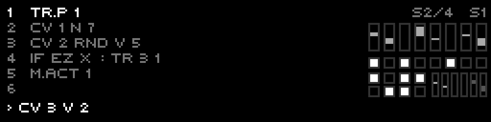
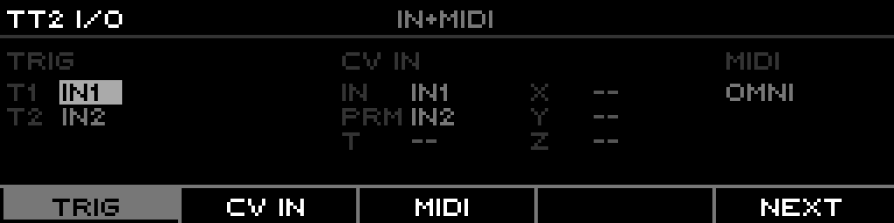
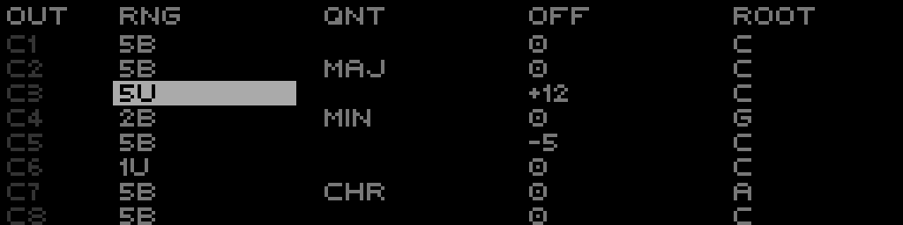

The complete T9type Track manual for XFORMER — teletype scripting on a sequencer track, from the two track types and how patterns/scenes work, through the full keyboard map and I/O grid, to the Performer-only op families and a step-by-step tutorial.
The T9type Track puts a full teletype on a sequencer track. It gives you:
TI-TR) to fire scripts.TI-IN and TI-PARAM) from XFORMER's CV inputs.E.*), per-CV LFOs (LFO.*), and the G.* modulator.What you actually get depends on which of the two track types you load. They share the same parser, the same op set, and the same I/O grid; they differ in how much program lives on the track and how the pattern selector is used.
TrackMode::TeletypeV2The classic full teletype on a track. One large program:
M) + Init (I).P/PN data).Use full TT2 when you want one big patch with the whole teletype surface available.
TrackMode::TeletypeMiniA compact variant that stores 4 scenes in the track and switches between them with the w-pattern selector (see Scenes). Each scene is a small, complete program:
DEL).Live command eval and SD scene save/load are not available on Mini (v1). Use Mini when you want several small, switchable scenes on one track.
| TT2 full | MINI | |
|---|---|---|
| Scripts | 8 + Metro + Init | Script 1 (boot+TI-TR1) + Script 2 + Metro |
| Trigger inputs | 8 | 2 |
| CV / gate outputs | 8 / 8 | mapped per I/O grid |
| Scenes on the track | 1 | 4 (w-pattern selects) |
| tt-patterns | 4 × 64 | 4 × 64 per scene |
| Live eval / SD scenes | yes | no (v1) |
P/PN data: 4 banks × 64 steps, read
and written by scripts (P.NEXT, P.PUSH, PN b i v, P.L,
P.I, …). Per-program musical data. The Pattern View / TRACKER editor and the pattern ops all
operate on tt-patterns.How the w-pattern selector is used differs by track type:
scene = w-pattern % 4.| w-pattern | 0 · 4 · 8 · 12 | 1 · 5 · 9 · 13 | 2 · 6 · 10 · 14 | 3 · 7 · 11 · 15 |
|---|---|---|---|---|
| Scene (Mini) | Scene 0 | Scene 1 | Scene 2 | Scene 3 |
WP opcode (Performer-added ops) reads the w-pattern
index of any track. It is not a tt-pattern op.A scene is a complete program: its own 3 scripts (Script 1 + Script 2 + Metro), its own 4 tt-patterns × 64 steps, and its own I/O config. A TT2-Mini track holds 4 scenes. All four scenes share one runtime.

S1/4 … S4/4 chip
(1-based) top-right; editing scripts edits the active scene's program.Changing the w-pattern retargets the active scene with no reset. The shared runtime — variables, the delay queue, and the metro tempo + phase — carries across the switch. Scripts simply start running from the new scene's program.
M <ms> in its Metro script;
it takes effect on the next tick after you switch.A transport stop (reset) is a partial reset: it clears outputs, the delay queue, and the
metro accumulator, and re-runs the boot script — but it does not wipe variables. (Full TT2 behaves
the same way.)
| Key | Action |
|---|---|
| F1 | Select S0 |
| F2 | Select S1 |
| F3 | Select S2 |
| F4 | Toggle S3 / Metro |
| F5 | Toggle Pattern View → Live View → Script View |
| Shift+F1–F4 | Fire script S0–S3 (TI-TR1..4) |
Each step key cycles through characters: digit → two letters.
| Step | Cycle | Step | Cycle |
|---|---|---|---|
| 1 | 1 → A → B | 9 | 9 → Q → R |
| 2 | 2 → C → D | 10 | 0 → S → T |
| 3 | 3 → E → F | 11 | . → U → V |
| 4 | 4 → G → H | 12 | : → W → X |
| 5 | 5 → I → J | 13 | ; → Y → Z |
| 6 | 6 → K → L | 14 | Backspace |
| 7 | 7 → M → N | 15 | Insert space |
| 8 | 8 → O → P | 16 | Commit line and advance |
| Shift + Step | Cycle | Shift + Step | Cycle |
|---|---|---|---|
| 1 | + → - | 9 | CV → CV.SLEW |
| 2 | * → / | 10 | TR. → TR.TIME |
| 3 | = → ! | 11 | PARAM → SCL |
| 4 | < → > | 12 | P.NEXT → P.HERE |
| 5 | % → ^ | 13 | ELIF → OTHER |
| 6 | & → | | 14 | RRAND → RND.P |
| 7 | $ → @ | 15 | DRUNK → WRAP |
| 8 | ? → ; | 16 | M.ACT → M.RESET |
| Key | Action |
|---|---|
| Page+9 | Copy current line |
| Page+10 | Paste line |
| Page+11 | Duplicate line |
| Page+12 | Comment / uncomment line |
| Page+13 | Delete line |
| Control | Action |
|---|---|
| ← | Backspace (delete character to the left) |
| Shift+← | Move cursor left |
| → | Insert space |
| Shift+→ | Move cursor right |
| Encoder press | Load selected line into edit buffer |
| Shift+encoder press | Commit line (save changes) |
| Encoder turn | Move cursor left/right (normal) or select line (with Shift) |
| Page+←/→ | History prev/next (live/edit) |
Connect a USB keyboard via the USB Host port. Letters are auto-uppercased for the teletype parser.
| Key | Action |
|---|---|
| Enter | Commit line and advance |
| Shift+Enter | Commit line, insert blank line |
| Backspace | Delete character before cursor |
| Delete | Delete character after cursor |
| ← / → | Move cursor left/right |
| ↑ / ↓ | Recall history (previous/next) |
| Esc | Clear edit buffer |
| Tab | Insert space |
| Home / End | Cursor to start/end of line |
| Ctrl+Home/End | Cursor to start/end |
| Ctrl+C | Copy current line |
| Ctrl+V | Paste clipboard |
| Ctrl+X | Cut current line |
| [ / ] | Previous/next script |
| F1–F4 | Run script S0–S3 |
| F5 | Run metro script |
| Alt+F1–F4 | Jump to edit script S0–S3 |
| Alt+F5 | Jump to edit metro script |
| Alt+/ | Toggle line comment |
| Control | Action |
|---|---|
| F1–F4 | Select pattern 0–3 |
| F5 | Toggle back to Script View |
| Steps 1–9 | Insert digits 1–9 |
| Step 10 | Insert digit 0 |
| Step 14 | Backspace digit |
| Step 16 | Commit edited value |
| Page+4 | Set pattern length to current row |
| Page+5 | Set pattern start to current row |
| Page+6 | Set pattern end to current row |
| ← | Backspace digit; Shift+← deletes row |
| → | Insert row; Shift+→ toggles turtle display |
| Encoder turn | Move up/down through pattern rows |
| Encoder press | Negate current value |
| Shift+encoder press | Commit edited value |
| Key | Action |
|---|---|
| ↑ / ↓ | Move up/down through rows |
| Alt+↑/↓ | Page up/down (8 rows) |
| ← / → | Previous/next pattern column |
| Alt+←/→ | Jump to first/last pattern column |
| Enter | Commit edit, advance to next row |
| Shift+Enter | Insert/duplicate row |
| Backspace | Backspace digit |
| Delete | Delete row |
| Space | Toggle 0/1 |
| Esc | Cancel edit |
| Ctrl+Home/End | Jump to first/last row |
| Ctrl+C/V/X | Copy / paste / cut cell value |
| [ / ] | Decrement/increment value by 1 |
| - / _ | Negate value |
| Digits 0–9 | Numeric entry (enters edit mode) |
If your T9type track is new, set up its I/O first so scripts can see the correct inputs/outputs.
TI-TR1..TI-TR4 assign trigger sources; TI-IN picks the CV source for IN;
TI-PARAM for PARAM; TI-X / TI-Y / TI-Z / TI-T optional CV sources for the X/Y/Z/T variables.
CV inputs here are direct hardware inputs (no routing needed).TO-TRA..TO-TRD map trigger outputs A–D to gate outputs; TO-CV1..TO-CV4
map CV outputs 1–4 to CV outputs. F5 (SYNC OUTS) fills TO-CV/TO-TR from the Layout-owned
outputs (does not overwrite unmatched slots). A ! means the slot points at an output not owned by this track in Layout.CV1 RNG/OFF .. CV4 RNG/OFF set per-output voltage range and offset.
Committing a track mode change to teletype from the Layout page prompts ASSIGN OUTS i-i+3?.
Answering Yes assigns both gate and CV outputs in that range to the track (no wrap beyond output 8).
Track LED note: in teletype mode, TR activity captures the track LEDs regardless of CV/gate output mapping. TR1 uses the assigned track LED; TR2–TR4 use the next track LEDs (no wrap).
Script View shows a real-time I/O grid in the top-right corner. Five sections:

| Block | Shows |
|---|---|
| BUS (left) | Four CV bus meters A–D (BUS 1-2 top row, BUS 3-4 bottom). |
| TI (top row) | TI-TR1..TI-TR4 state. Dim = unassigned (None); medium = assigned but inactive; bright = assigned and high. |
| TO (middle row) | TO-TRA..TO-TRD. Solid block = owned by this track (bright when active); outline = owned by a different track (Layout mismatch); dim = target gate assigned elsewhere. |
| CV (bottom, double height) | TO-CV1..TO-CV4 as a bipolar bar from center (0V). Up = positive, down = negative. Bright = owned by this track, dim = mismatch; hidden bar if assigned to another track. |
| IN / PARAM (right) | IN value top, PARAM value bottom. Brighter when assigned, dim when unassigned. |
Page+Track 6 → TT PANIC instantly silences all teletype
tracks: disables metro (M.ACT 0), clears pending DEL commands, clears TR pulses and forces gates low,
zeroes all teletype CV outputs, stops E.*/LFO.*/G.* modulation, and clears Geode routing/phase.
When a track has no scripts, it seeds two defaults:
S0 M.ACT 1 # enables metro
M CV 1 N 48 ; TR.P 1 # C3 on CV1 + trigger pulseThese op families are XFORMER additions and do not exist in stock teletype. For full per-op detail see
docs/new-teleops.md. (Stock-teletype ops live in the upstream teletype/tl-manual.md.)
LFO.*)Per-CV low-frequency oscillator with waveform, amplitude, fold, and offset control.
LFO.R 1 2000 # 2s cycle
LFO.W 1 15 # triangle → saw
LFO.A 1 80 # amplitude
LFO.F 1 0 # no fold
LFO.O 1 8192 # offset/bias
LFO.S 1 1 # startDefaults: LFO.R=1000 ms, LFO.W=0, LFO.A=100, LFO.F=0, LFO.O=8192, LFO.S=0.
E.*)Per-CV attack/decay envelope with target/offset.
E.O 1 0 # offset/baseline
E 1 12000 # target (raw 0-16383)
E.A 1 10 # attack ms
E.D 1 80 # decay ms
E.T 1 # trigger envelope
E.R 1 1 # pulse TR1 at end of rise
E.C 1 2 # pulse TR2 at end of cycle
E.L 1 4 # loop 4 cycles (0 = infinite)Defaults: E=16383, E.A=50 ms, E.D=300 ms, E.O=0, E.L=1.
G.*)Polymetric rhythm generator with per-voice timing control.
G.R 1 0 # mix to CV1
G.V 1 7 8 # voice 1: 7-div, 8 repeats (immediate trigger)| Parameter | Behavior |
|---|---|
G.TIME | 0 fast (~166.7 ms / 6 Hz), 16383 slow (~60 s) |
G.TONE | 8192 no spread; <8192 undertones; >8192 overtones |
G.RAMP | 0 percussive, 8192 triangle, 16383 reverse |
G.CURV | low step/log, 8192 linear, high smooth |
G.RUN | 8192 neutral; positive emphasizes; negative reverses/slows |
G.MODE | 0 Transient, 1 Sustain, 2 Cycle |
G.V v divs reps | immediate trigger; divs events per bar; reps extra hits (0 single, -1 infinite) |
Defaults: G.TIME=8192, G.TONE=8192, G.RAMP=8192, G.CURV=8192,
G.RUN=8192, G.MODE=0, G.O=0, G.BAR=4, tune ratios 1/1..6/1.
Aliases: G.T/G.I/G.RA/G.C/G.N/G.M/G.B/G.L. Compound: G.S t i n sets TIME/TONE/RUN (no trigger).
When transport is stopped, Geode free-runs using the last known bar duration (defaults to 120 BPM if none).
BUS is a shared CV bus (4 slots) that lets teletype modulate other tracks without using hardware CV outputs.
Set BUS 1 X in a script, then in the Routing page create a route with source BUS 1 and target
Transpose (or any track target). BUS is global — multiple teletype tracks can read/write the same slot
directly without routing.
Read-only opcode returning position within the current musical bar (0-16383), auto-adjusting to the project time signature. Zero overhead (reads the already-computed measure fraction), updates at 192 PPQN.
CV 1 V BAR # 0→10V ramp over each bar
CV 1 V BAR 4 # ramp spanning 4 bars
CV 2 V SUB BAR 8192 # bipolar -5V..+5V (centered)
IF GT BAR 8192: TR.P A # pulse only in 2nd half of barIF WR: TR.P A # WR = 1 when playing, 0 when stopped
W.ACT 1 # start (0 = stop, 2 = pause)
X WBPM # read current BPM
WBPM.S 120 # set tempo (1-1000 BPM, direct value)Return tempo-derived durations in milliseconds; n/m clamp to 1-128.
X WMS # 1/16 note in ms
X WMS 16 # one bar in 4/4
X WTU 3 # beat / 3 (triplet)
X WTU 7 2 # 2 * (beat / 7)Per-step gate and note access for Note tracks (track 1..8, step 1..64). Operate on the playing pattern; non-Note tracks return 0 / do nothing.
WNG t s # get gate (0/1); WNG t s v sets it
WNN t s # get note 0..127; WNN t s v sets it
WNG.H t # gate at current gate step
WNN.H t # note at current note stepCV 1 V RT 1 # mirror Route 1 source (pre-shaper, 0-16383)
CV 1 N SCALE WP 1 1 16 60 75 # map track 1's w-pattern 1-16 to notes
IF EQ WP 1 5: TR.PULSE 1 # trigger when track 1 on pattern 5
WP.SET 1 2 # force track 1 to pattern 2 (1-based)WP i returns the 1-16 pattern index of track i (1-8); invalid tracks return 0.
Read-only getter; settable only via WP.SET.
Process the active pattern range P.START..P.END; PN.* variants target a specific pattern.
P.PA 100 # shift all steps +100 (P.PS/P.PM/P.PD/P.PMOD = sub/mul/div/mod)
P.SCALE 0 16383 48 72 # remap values to MIDI range
X P.SUM # density (P.AVG/P.MINV/P.MAXV)
I P.FND 0 # find first zero
RND.P 0 4095 # randomize working pattern (RND.PN 2 ... targets pattern 2)TR.D 1 2 # every other pulse on TR1
TR.W 1 50 # 50% width based on post-div interval
TR.W 1 0 # disable width mode (back to TR.TIME)| Op | Purpose | Example |
|---|---|---|
PERLIN | smooth Perlin noise, 0-16383 | CV 1 V PERLIN |
NORMAL | Gaussian (Box-Muller), clamped ±3σ | CV 1 V NORMAL |
PINK | 1/f pink noise (Voss-McCartney) | CV 1 V PINK |
WALK step start | bounded random walk as a CV source | CV 1 V WALK 100 8192 |
LFO.V n | read LFO n's output into a variable | X LFO.V 1 |
P.*)Fill the active tt-pattern from an algorithm.
| Op | Purpose | Example |
|---|---|---|
P.LSYS axiom | L-system string rewriting | P.LSYS A |
P.THUE n | Thue-Morse aperiodic sequence | P.THUE 16 |
P.CA1D rule n | 1D Wolfram cellular automaton | P.CA1D 30 16 |
P.CA2D B/S w h | 2D Life-like automaton (rows=voices) | P.CA2D B3/S23 8 8 |
P.MARKOV ... | first-order Markov chain | P.MARKOV (0 60 0.7)(1 64 0.3) |
P.LORENZ s r b | Lorenz attractor → values | P.LORENZ 10 28 2.667 |
P.DBRU win | De Bruijn sequence (every N-gram once) | P.DBRU 2 |
P.REAC feed kill | reaction-diffusion (Gray-Scott) rhythm | P.REAC 0.037 0.06 |
P.FIB n len | golden-angle event spacing | P.FIB 8 16 |
FIB n | nth Fibonacci number as a value | CV 1 V FIB 10 |
BIN val len | integer's bits as a gate pattern | BIN 13 16 |
| Op | Purpose | Example |
|---|---|---|
CANE.TR.AND/OR/XOR p1 p2 | bitwise combine two trigger patterns | CANE.TR.AND P1 P2 |
CANE.TR.NOT p1 | invert a trigger pattern | CANE.TR.NOT P1 |
P.BRES hits steps | Bresenham-line rhythm (Euclidean alt.) | P.BRES 3 8 |
P.GHOST prob bias | rhythm-aware probability fill | P.GHOST 0.3 offbeat |
P.THIN bias prob | rhythm-aware note removal | P.THIN sixteenths 0.2 |
LCM a b / GCD a b | polyrhythm math helpers | LCM 3 4 → 12 |
P.*)Operate on the active tt-pattern range.
| Op | Purpose | Example |
|---|---|---|
P.PAL | palindrome: alternate forward/reverse | P.PAL |
P.WTH a b XFORM | apply a transform to only steps a..b | P.WTH 2 6 REV |
P.STR len | stretch/resample to a target length | P.STR 16 |
P.URN n | pick n distinct values (no replacement) | P.URN 4 |
P.INV center | mirror values around a center point | P.INV 8192 |
P.WALK maxstep start | fill via random walk | P.WALK 4096 0 |
P.SAWALK lo hi | self-avoiding walk fill (no repeats) | P.SAWALK 0 127 |
P.COMP mask... | keep values where mask is 1 | P.COMP 1 0 1 0 |
P.UNDUP | remove consecutive duplicates | P.UNDUP |
P.ACCUM | cumulative sum (running total) | P.ACCUM |
P.STUTT n | ratchet: repeat each value n times | P.STUTT 3 |
P.OFF amt delay | delayed transformed copy combined in | P.OFF 7 0.5 |
P.SINE / P.COS / P.SQR len periods lo hi | wave-fill a pattern | P.SINE 16 1 0 16383 |
| Op | Purpose | Example |
|---|---|---|
FLIP ratio | true for first ratio% of each chunk | IF FLIP 50: TR.P 1 |
ODDS n beats | time-windowed probability (clock-normalized) | ODDS 0.5 1: TR.P 1 |
INTOX mode amt | named timing jitter: BEER/HASH/COFFEE/LSD/DETOX | INTOX BEER 5 |
FUTURE bars:reps CMD | schedule a command N bars out, M times | FUTURE 4:2 SCRIPT 1 |
SuperCollider-style mapping curves.
| Op | Purpose | Example |
|---|---|---|
LINLIN / LINEXP / EXPLIN / EXPEXP / LINCURVE | linear/exponential value remap | CV 1 N SCALE 0 127 LINLIN 10 100 |
SMOOTHSTEP x | cubic smooth interpolation, [0,1]→[0,1] | CV 1 V SMOOTHSTEP 0.5 |
| Op | Purpose | Example |
|---|---|---|
CHOOSE a b c ... | pick one of N args with equal probability | CHOOSE 60 64 67 72 |
WCHOOSE v w v w ... | weighted pick from (value, weight) pairs | WCHOOSE 60 50 64 30 67 20 |
SUPERIMPOSE out XFORM | sum original + transformed onto one output | SUPERIMPOSE 2 REV |
Intended for intermediate teletype users. Assumes basic teletype syntax, familiarity with the XFORMER interface, and CV/gate concepts.
TR.TOG ATR.TOG A
CV 1 V 5X ADD X 1
CV 1 V X
TR.TOG ACV 1 N P.NEXTP.PUSH 0
P.PUSH 12
P.PUSH 7
P.PUSH 5
P.L 4P.N 1
P.PUSH 0
P.PUSH 2
P.PUSH 4
P.PUSH 5
P.L 4
CV 1 N PN.NEXT 1 # in your script: next value from pattern 1EVERY 2: TR.P A
EVERY 4: TR.P B
CV 1 V RAND 5IF GT X 5: CV 1 V 5
IF LTE X 5: CV 1 V 0
X ADD X 1
TR.TOG AL 1 4: TR.P I # pulse gates 1-4 in sequence
CV 1 N RAND 24 # random note in 2-octave rangeM/M!/M.A are derived from
tempo/div/mult and read-only (edits show "Clock Mode").
M.ACT 1 # enable metro
M 500 # 500 ms (120 BPM) [MS timebase only]
M.A 500 # set all teletype metros
M.ACT.A 1 # enable metros on all teletype tracks
M.RESET.A # reset all teletype metro timersCV 2 V DRUNK
DRUNK.WRAP 1CV 1 V IN
CV 2 V PARAM
X SCALE 0 16383 0 10 IN # scale IN to 0-10V
CV 1 V XP.I ADD P.I 2 # skip 2 steps
CV 1 N P.HERE # current pattern value
P.START 2
P.END 6
P.WRAP 1 # wrap within the rangePROB 50: TR.P A # 50% chance to pulse A
CV 1 V RRAND 2 8 # random voltage 2-8V
CV 1 V DRUNK
DRUNK.MIN 0
DRUNK.MAX 16383MI.NV # latest MIDI note as voltage
MI.CCV # latest MIDI CC as voltage
CV 1 V MI.LNVTR.P A
DEL 100: TR.P B # B 100ms after A
DEL 200: TR.P C
S: CV 1 V 5 # stack commands
S: TR.P A
S.ALL # execute the stack# Script 1 returns the square of X:
* X X
# Caller:
A $F 1 # A = X squared
# $F1 / $F2 pass 1 or 2 parameters via I1/I2:
FR + I1 I2 # Script 1
A $F2 1 3 4 # A = 7Q CV 1 # push current CV 1
Q.N 4 # queue length 4
CV 2 V Q.AVG # CV 2 = average of queue# Script 1 (triggered by input):
CV 1 N P.NEXT
TR.P A
X ADD X 1
MOD X 8
EQ X 0
PROB 75: SCRIPT 2
# Script 2 (called conditionally):
CV 2 V RAND 10
TR.P BP.NEXT or increment P.I manually.
Keep scripts efficient, use clock timing for synced sequences, and split purposes across the four tt-pattern banks.